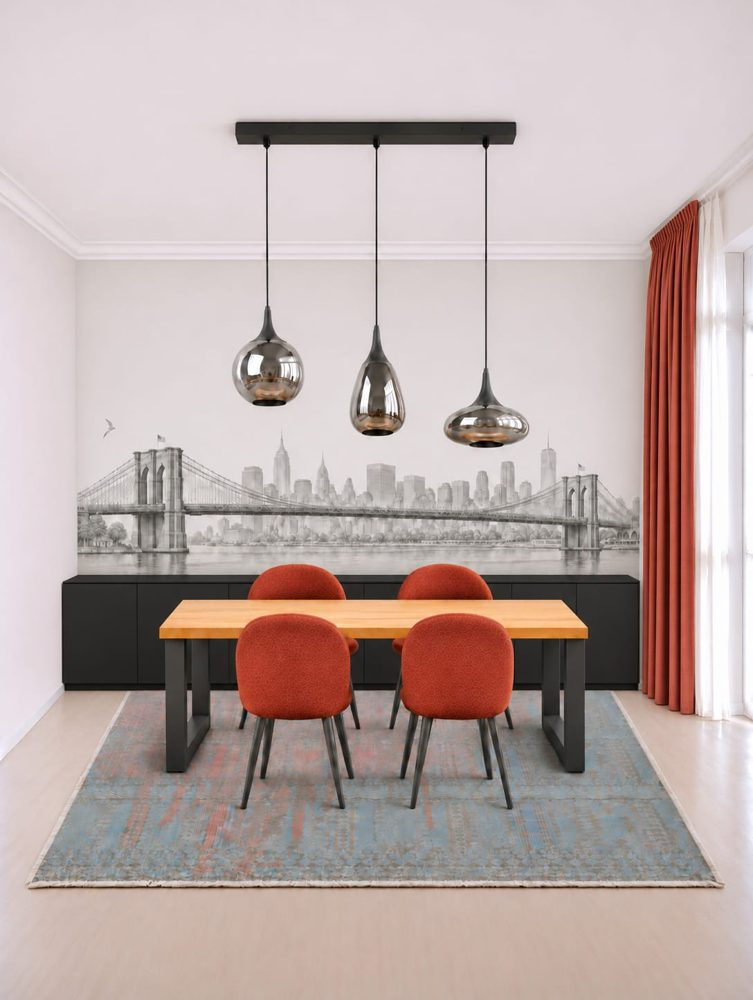

Designer's proposal, changed
Designer's proposal (starting point)
The designer's render. What I like: the New York wall, the long black chest at the back, the hanging lamp set over a wood table. What I would change: the red chairs and red curtain, the Brooklyn Bridge, and the table and lamps, which come from the kitchen.